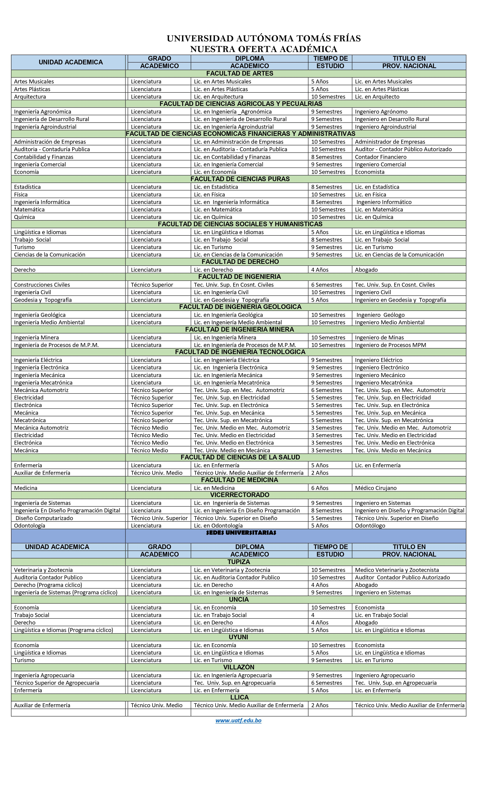

Departamento de Admisiones y Registros D.A.R.
Sobre Nosotros
El Departamento de Admisiones y Registros de la Universidad Autónoma Tomás Frías tiene como objetivo Planificar, Organizar, Coordinar y Dirigir con los Directores Académicos Facultativos, Escuelas e Institutos, los sistemas y mecanismos de inscripciones, modalidades de seguimiento y control de Estudiantes, definiendo y orientando los procedimientos computarizados de los registros estudiantiles.
Programas Académicos
- El Departamento de Admisiones y Registros de la Universidad Autónoma Tomás Frías, comunica el cronograma de los trámites académico-administrativos para las carreras y/o programas en la gestión /.
-

-

-
Pasos para inscribirse al PSA

-
Pasos Para Sacar Carnet Universitario (Estudiantes Nuevos)